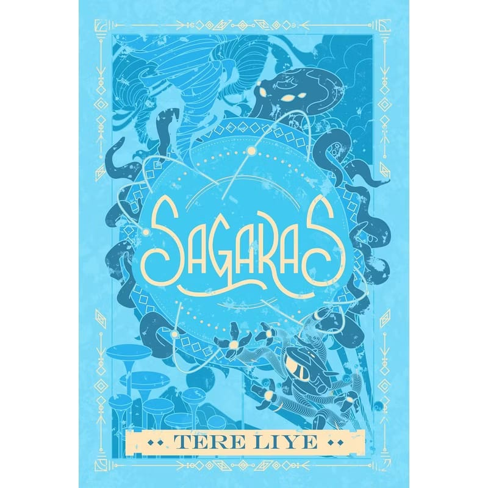

E-BOOK
Trending
Sagaras
14 Nov 2024
2025 • 376 Halaman
di Klan Polaris saat pandemi level 10 menyerang. Seorang anak bernama N-ou, yang berusia dua belas tahun, terinfeksi virus mematikan dan terpaksa berpisah dari orang tuanya selama evakuasi. Ia ditinggalkan di Kota E-um yang telah hancur akibat pandemi.
Di tengah kesendiriannya, N-ou menemukan seekor anak kucing terjepit di bawah reruntuhan gedung dan menyelamatkannya. Kucing itu diberi nama Si Putih. Sejak saat itu, mereka menjalin persahabatan erat dan bersama-sama menjelajahi Klan Polaris untuk mencari cara menembus dinding pembatas wilayah evakuasi.
2024 • 384 Halaman
Ali, Raib, dan Seli. Dalam buku ini, fokus cerita adalah upaya Ali mengungkap misteri keberadaan orang tuanya yang hilang.
Setelah menemukan petunjuk penting, Ali memutuskan untuk pergi ke Klan SagaraS, tempat terakhir di mana jejak orang tuanya terdeteksi. Raib, Seli, dan Master Batozar tidak membiarkan Ali pergi sendiri dan memutuskan untuk menemaninya dalam perjalanan berbahaya tersebut
Fantasi, Petualangan, Pertemanan, Diri Minteri